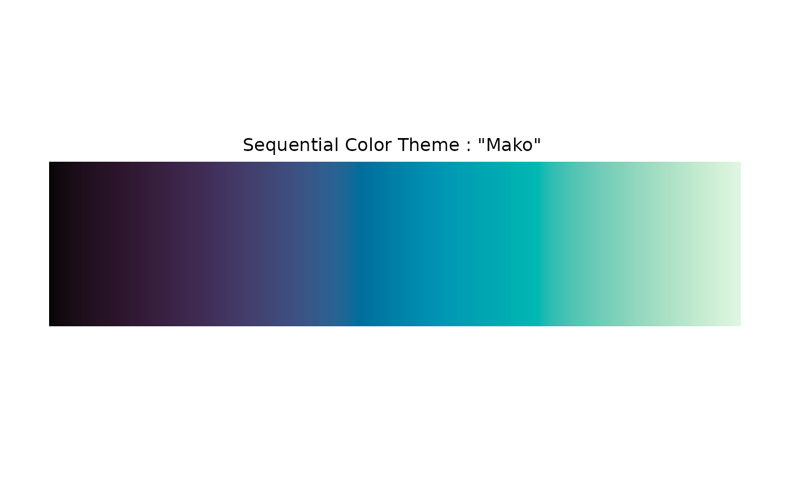
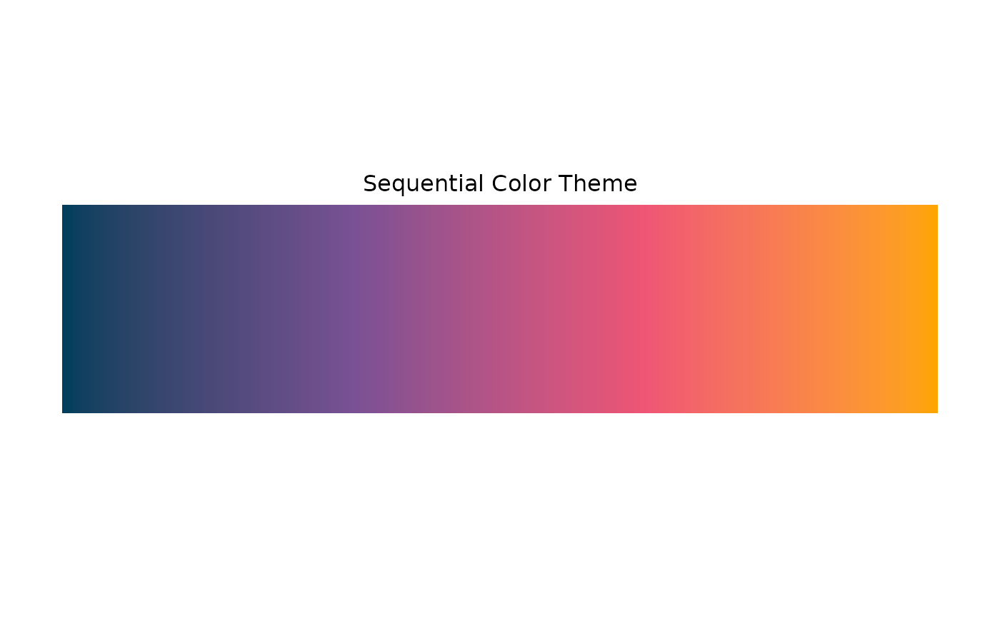
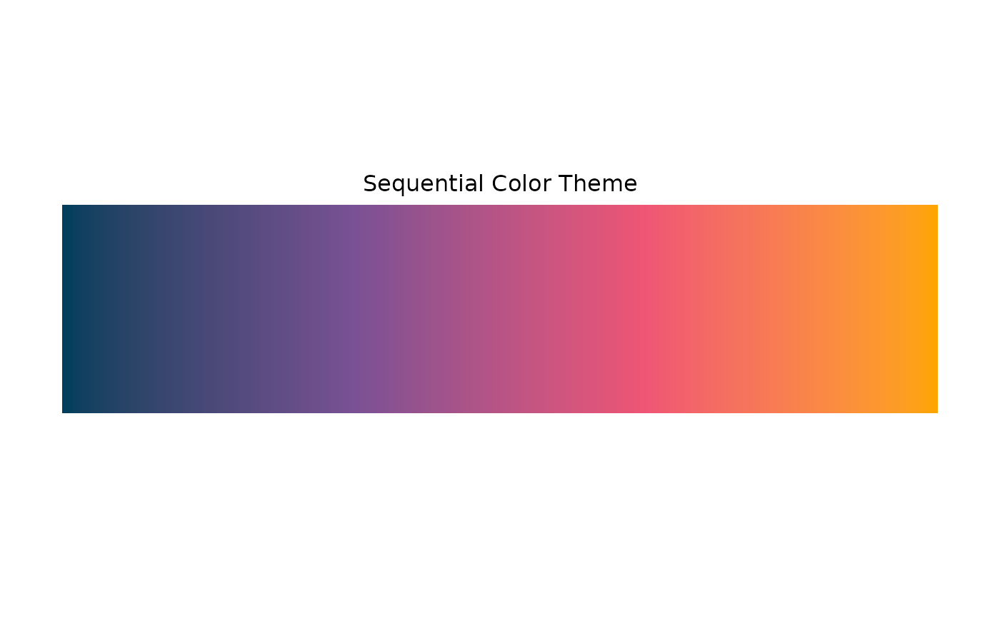

color.theme() returns an object of class "color.theme" that provides two types of color functions.
Arguments
- colors
one of the following: a color theme name such as "Viridis" with the optional suffix "_r" for color themes in reverse order ("Viridis_r"), a character vector of color names, a palette function, or a ramp function to be used to create a color theme.
- type
a character string specifying the type of the color theme: One of "sequential", "qualitative" or "diverging".
- name
an optional character string, specifying the name of the color theme.
- ...
optional arguments to be passed to palette or ramp functions.
- x
a "color.theme" object to be displayed.
- n
integer. the number of colors.
- text
a character string to be displayed.
- display
logical. If
TRUE, colors are displayed in the plot area.
Value
color.theme() returns a "color.theme" object containing following components:
- ramp
the function that takes a numeric vector
xof the values within [0, 1] and returns a color name vector.- palette
the function that takes an integer
nand returns a color name vector of lengthn.- type
the type of the color theme; "sequential", "diverging" or "qualitative".
- name
the name of the color theme.
Details
"color.theme" objects is a container of the two types of color functions: palette(n) returns a color name vector of length n, and ramp(x) returns color names for each values of x within [0, 1].
Some color themes are "qualitative" and do not contain ramp() function.
Examples
ct <- color.theme("Zissou 1")
ct
#> Diverging Color Theme : "Zissou 1"

ct$palette(5L)
#> [1] "#3B99B1" "#7CBA96" "#EACB2B" "#E78F0A" "#F5191C"
ct$ramp(seq.int(0, 1, 1/4))
#> [1] "#3A99B1" "#7CB997" "#D3BC5E" "#E78D08" "#F4191B"
ct <- color.theme("Zissou 1_r")
ct
#> Diverging Color Theme : "Zissou 1"
 ct$ramp(seq.int(1, 0, -1/4))
#> [1] "#3A99B1" "#7CB997" "#D3BC5E" "#E78D08" "#F4191B"
ct <- color.theme("Mako", alpha = .5)
ct$palette(5L)
#> [1] "#07070780" "#42346080" "#007FA880" "#48C2B480" "#E0F7E180"
color.theme("midr")
#> Diverging Color Theme : "midr"

ct$ramp(seq.int(1, 0, -1/4))
#> [1] "#3A99B1" "#7CB997" "#D3BC5E" "#E78D08" "#F4191B"
ct <- color.theme("Mako", alpha = .5)
ct$palette(5L)
#> [1] "#07070780" "#42346080" "#007FA880" "#48C2B480" "#E0F7E180"
color.theme("midr")
#> Diverging Color Theme : "midr"
